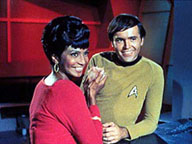
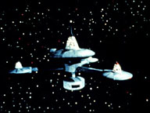
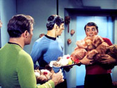
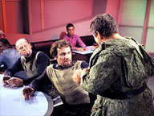
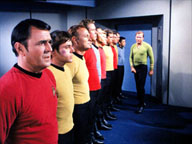
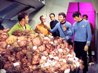
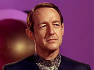
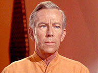

|
MANCHETE
DO episódio
Humor e
competncia criam clssico absoluto de Jornada
episódio
anterior | Prximo episódio Sinopse:
Data Estelar:
4523.
 A Enterprise chamada
Estao Espacial K7 por uma mensagem de prioridade um. A Estao Espacial
está localizada não sistema do planeta Sherman, num quadrante que está sendo
disputado pela Federao e pelo imprio Klingon. O quadrante o local da
batalha de Donatu 5, que ocorreu 23 anos antes. Os termos do tratado de paz de
Orgnia estabelecem que o planeta ser revertido para o lado que demonstrar
condies de desenvolv-lo com mais eficincia.
Kirk fica furioso ao descobrir que a mensagem de prioridade um recebida
mostra-se ser injustificada. A mensagem foi enviada por Nilz Baris, Subsecretrio
de Agricultura naquele quadrante e responsvel pelo desenvolvimentão do planeta.
Na verdade, Baris somente queria apoio para vigiar a estao que estava com os
compartimentos de carga cheios de um tipo de gro chamado quadrotritical, que
seria cultivado não planeta Sherman. O assistente de Baris Arne Darvin, e o
Senhor Lurry o gerente da Estao Espacial.
Uma nave klingon chega estao e requisita que sua tripulao possa
desembarcar para descansar. Kirk diz ao capito klingon, Koloth, que ele
poderia levar doze de sua tripulao para a estao por vez, mas que haveria
um segurana para cada Klingon.
 Enquanto isso, o comerciante intergalctico Cyrano Jones presenteia Uhura com
uma criatura pequena e peluda chamada pingo. Ela leva o bichinho para a
Enterprise, onde ele prontamente comea a se reproduzir. Jones também tenta
vender pingos aos Klingon que estão na estao, mas as criaturinhas felpudas
reagem negativamente estes, emitindo sons e tremendo.
Problemas acontecem entre os Klingons e membros da tripulao da Enterprise,
que também estavam em descanso na estao, quando um dos Klingons compara
humanos com vermes de sangue de Regulan. Isso enfurece Chekov, que fica ainda
mais nervoso quando o klingon comea a depreciar e lanar comentários deletrios
em relao ao capito Kirk, mas, Chekov contido por Scotty. Mas, quando o
klingon compara a Enterprise com uma lata de lixo, o prprio Scotty esmurra o
klingon, dando início a uma feroz briga de bar que envolve quase todos os
presentes.
após o acontecido, j na Enterprise, quando Kirk questiona a tripulao,
Ninguém admite ter comeado a briga, mas quando o capito questiona Scotty
sozinho, o engenheiro admite ter iniciado o conflito, e revela que havia
refreado os nimos enquanto Kirk estava sendo insultado, mas que foi forado a
tomar uma atitude quando os klingons insultaram a Enterprise.
Os pingos comeam a se proliferar pela Enterprise e Kirk chega a sentar-se
acidentalmente sobre um deles na cadeira de comando na ponte da nave. Kirk
ordena que Uhura retire os pingos da nave e se tele-transporta para a Estao
Espacial para pedir explicaes Cyrano Jones. Mas, como apenas animais
perigosos eram proibidos de serem transportados e comercializados, e os pingos no
se enquadravam nesta descrio, Kirk nada pode fazer.
 após Kirk descobrir que os pingos se espalharam pela Enterprise atravs do
sistema de ventilao da nave, o capito fica preocupado que os pingos possam
ter infestado os compartimentos de armazenamentão dos gros da estao, j
que esta possua o mesmo sistema de ventilao da nave.
O receio de Kirk prova estar correto quando o capito abre um dos
compartimentos e muitos pingos caem sobre sua cabea. Spock calculou que
deveria existir 1.771.561 pingos na estao, assumindo que cada pingo dava
origem a mais 10 a cada 12 horas, num perodo de 3 dias. Mas, Spock percebe
que, inexplicavelmente, muitos dos pingos estavam mortos: O gro havia sido
envenenado. Todos vo para o escritrio da Estao Espacial, que também est
cheio de pingos. Um destes comea a gritar e tremer para o assistente de Baris,
o Darvin. Kirk verifica que os pingos gostam de humanos e vulcanos, mas que se
incomodam com os klingons.
O capito pede que o Dr. McCoy faa um exame não Sr. Darvin, sendo descoberto
que este era um klingon. Darvin admite que era um agente infiltrado e que havia
envenenado o gro quadrotritical, sendo preso. Kirk então ordena que os
klingons deixem o espao da Federao rapidamente. Kirk ordena também que
Cyrano Jones recolha todos os pingos da estao, tarefa que Spock estima que
leve 17,9 anos para ser completada.
Outro transporte espacial desviado para fornecer os gros para o planeta
Sherman, mas isso não resolve o problema de remoo dos pingos da Enterprise.
As pequenas criaturas so removidas da nave quando Scotty tele-transporta todos
eles para a nave klingon, onde os pingos não apreciariam a nova casa, mas
definitivamente os klingons apreciariam menos ainda seus novos passageiros.
comentários:
 "The
Trouble withá Tribbles" um interessante segmentão da Série Clássica,
e tem como sua maior virtude a fluidez com a qual os acontecimentos se
desenrolam dentro de sua execuo. Partindo de uma situao potencialmente
perigosa, que envolve a disputa com os Klingons pelo planeta Sherman, o segmento
evolui de forma a se transformar em um dos mais divertidos episódios de Jornada
nas Estrelas.
Entretanto, pode-se assistir ao episodio varias vezes procurando pelos motivos
que o fazem ser to agradvel sem se cansar, mas também sem que se chegue a
uma concluso a respeito. Talvez a resposta resida exatamente na simplicidade.
Comeando por um roteiro que se preocupa apenas em dar material para que seus
personagens faam seu trabalho de forma eficiente, David Gerrold, co-responsvel
também pela historia de I, Mudd, entre outras, parece ter certa
habilidade para a comedia, o que um dom raro.
Prem, diferente de I, Mudd, que executava um humor mais
sofisticado e experimental, o atual segmentão assume uma linha que mais o
assemelha a um sitcom, com um humor mais cotidiano, pelo menos o cotidiano de
uma tripulao de nave estelar. Neste sentido talvez resida uma grande
influencia de Josephá Pevney. Pevney que esteve frente de clssicos absolutos
da serie original como "The City on the Edge of Forever", "Journey
to Babel" e "The Devil in the Dark", entre diversos
outros, também esteve frente da direo de diversos episódios da Série
The Munsters, transmitida pela NBC entre 1964-1966, o que parece ter
afinado sua veia cmica. A dupla Gerrold/Pevney executa um trabalho de elegncia
absoluta com um resultado brilhante.
 Diz-se com muita propriedade que rir de si mesmo uma qualidade que deve
sempre ser exercitada e tal qualidade exercitada aqui, com sucesso. O plot
Klingon-Planeta Sherman- quadrotritical não tem nenhuma importncia em
si, e serve apenas para movimentar os eventos, que vo se apresentando de cena
em cena. Comeando pela surpresa de Kirk ao chegar estao K7 preparado
para uma batalha e encontrar representante da Federao um assustado com a
segurana de seus gros.
Fosse este um episodio srio, baseado nas informações dadas por Spock sobre a
importncia do planeta Sherman para a Federao, deveramos concluir que o
secretario Baris tinha toda razo em estar preocupado, e que os arranjos para a
segurana da carga realmente eram completamente inadequados. além disto
considerando as caractersticas de alimentao e reprodução dos Pingos -
outro charme deste segmentão - a ameaa que tais criaturas representam
principalmente em um ambiente confinado como uma estao espacial, o perigo
potencial que elas representam também por demais subestimado.
Mas como tudo muito cool em "The Trouble withá Tribbles",
passamos a assistir Kirk tripudiar sobre o pobre secretario todo o tempo, e
claro, nos divertimos muito com isto. As coisas vo acontecendo até que de
repente o episodio acabou, com os Klingons desmascarados, o orgulho de Kirk
re-estabelecido e a praga de pingos controlada, isto claro, se voc não for
um Klingon a bordo da nave do capito Koloth.
 interessante observar que o episódio coerente com o comportamentão padro
do capito da Enterprise, que não parece muito confortvel ao lidar com os
representes civis (polticos) da Federao, sem duvida um reflexo do
desconforto que muitos sentiam em relao poltica norte americana da década
de sessenta, e ponto varias vezes sublinhado nas estrelinhas da Série Clássica.
Mas não s Baris que tripudiado. O prprio Kirk passa por situaes
melindrosas, comeando pela sua reao ao perceber que ele parece ser o nico
não saber o que quadrotritical, passando pela decepo ao descobrir
que seu oficial comandante Scotty havia comeado uma briga por que um Klingon
havia insultado a Enterprise, e não por ter insultado seu capito, e claro,
a cena cmica mais conhecida de toda a galxia, o banho de pingos em nosso
bravo capito.
E por falar em cenas duas ao menos não poderiam deixar de ser citadas com uma
menão especial. Primeiro a briga não bar, ao melhor estilo Western, também
está nos anais da mitologia trekker, claro. Segundo, o final tradicional na
ponte da Enterprise, desta vez reunindo todos os tripulantes principais, e com
Scotty tendo a ultima palavra em outro instante eternão de Jornada. Todos
estes momentos mgicos podem ser revisitados a exausto e ainda despertar ao
menos um sorriso não f da Série Clássica, e mesmo nos não iniciados.
 E falando em tripulantes, este outro fator que faz deste um segmento
especial, a utilizao de praticamente todos os personagens do cast principal
da Série. Scott, McCoy, Uhura e Chevok estão muito bem inseridos não desenrolar
do episodio, cada um a sua maneira, e demonstram uma harmonia que ajuda a
justificar por que personagens to pouco aproveitados em toda a existncia da
serie contam prestigio muitas vezes inversamente proporcional a sua participao
em Jornada.
As diversas tiradas inconseqentes de Chekov sobre tudo ter sido descoberto ou
inventado na Rssia, a fascinao quase infantil de Scotty por engenharia e
claro, pela Enterprise, o bom humor a respeito de quase tudo e ao mesmo tempo
a reao sempre passional de McCoy quando toma partido de algo ou algum, a
beleza nica e a voz afinada de Uhura, so marcas registradas destes
personagens que se tornariam inconfundveis ao longo do tempo. Tais caractersticas
entre outras j foram e voltaro e ser apresentadas em outros episódios, mas
sempre que estes elementos so usados juntos e em equilbrio, o resultado
agradavelmente positivo. A nota negativa sobre assunto, e que assim como em I,
Mudd outra vez George Takei foi negligenciado.
 Kirk e Spock tm também atuao destacada, tendo conseguido trabalhar muito
bem dentro desta proposta mais bem humorada. Nimoy consegue manter o nvel de
suas boas atuaes, e usa com muita eficincia as oportunidades que roteiro
lhe fornece para fazer rir, sem perder a pose e fazendo um perfeito contraponto
a Shatner, que merece uma menão honrosa. Criticado por muitos que questionam
suas qualidades como ator, ele consegue trabalhar muito bem aqui, brilhando
tanto quanto Nimoy, com uma atuao leve, porm segura e sincronizada com
todo o contexto, contribuindo de forma decisiva para o sucesso do segmento. Nota
10 para dupla.
Os atores convidados tm uma boa participao, em especial o mascate das galxias
Cyrano Jones (Stanley Adams), um cidado simptico que acaba por causar um
grande problema ao retirar os pingos de habitaté natural, como disse Spock, e com
isto transformar esta adorvel criatura em uma praga. William Campbell, que
interpreta Koloth, o segundo Klingon a aparecer em Jornada nas Estrelas,
não teve importncia significativa, mas também não comprometeu. Justia
seja feita, ele tinha pouco aqui com o material dado a ele. não há como um
roteiro fornecer momentos importantes para tanta gente em to pouco tempo.
Enfim o resultado
de tudo isto um episodio divertido com qualidades de um bom vinho, que refora
o sabor com o passar dos anos e mantm um charme irresistvel.
citações:
Kirk:
"I have never questioned the orders or the intelligence of any
representative of the Federation, until now."
("Eu nunca questionei as ordens ou a inteligncia de nenhum representante
da Federao, até agora.")
Koloth: "Captain Kirk, there's been não formal declaration of hostilities
between our two respective governments, so naturally our relationship will be a
peaceful one."
("Capito Kirk, não existe nenhuma declarao formal de hostilidades
entre nossos respectivos governos, então naturalmente nosso relacionamentão ser
pacificção.")
Spock: "A most curious creature, Captain. Its trilling seems to have a
tranquilizing effect on the human nervous system. Fortunately, of course, I
am... immune to its effect."
("Uma criatura curiosa, capito. Seu tremor parece ter um efeito tranqilizante
não sistema nervoso humano. Afortunadamente, claro, eu sou imune a este
efeito.")
Kirk: "What was it they said thaté started the fight?"
("O que foi que ele disse para comear a briga?")
Scotty: "They called the Enterprise a garbage scow... sir."
("Ele chamou a Enterprise de lata de lixo, senhor.")
McCoy: "I don't know muchá about these little tribbles yet, but there's
one thing I've discovered."
("Eu não sei muito sobre este pequenos pingos ainda, mas tem uma coisa que
eu descobri.")
Spock: "What is that, Doctor?"
("E o que , Doutor?")
McCoy: "I like them ...better than I like you".
("Eu gosto deles, mais do que eu gosto de voc.") Trivia:  O segmentão introduz algumas informações da mitologia da franquia, como o
conhecimentão da batalha de Donatu V, travada entre Federao e Klingons, e a
revelao da existncia do tratado de paz de Orgnia, aparentemente imposto
pelo Organianos a partir dos incidentes de Errand of Mercy.
Tal postulado nunca foi muito bem esclarecido além dos fatos mostrados aqui, e
parecem apontar para um desdobramentão dos fatos posteriormente aos eventos
daquele episodio, mas isto fica não terrenão das especulaes, que com o passar
dos anos, foram canonizadas pela mitologia da Série Clássica.
O segmentão introduz algumas informações da mitologia da franquia, como o
conhecimentão da batalha de Donatu V, travada entre Federao e Klingons, e a
revelao da existncia do tratado de paz de Orgnia, aparentemente imposto
pelo Organianos a partir dos incidentes de Errand of Mercy.
Tal postulado nunca foi muito bem esclarecido além dos fatos mostrados aqui, e
parecem apontar para um desdobramentão dos fatos posteriormente aos eventos
daquele episodio, mas isto fica não terrenão das especulaes, que com o passar
dos anos, foram canonizadas pela mitologia da Série Clássica.
Os pingos fizeram tanto sucesso que se tornaram itens de venda pelo
correio ou convenes. Estes itens eram confeccionados em pequena escala, mas
posteriormente uma empresa adquiriu os direitos lanando uma variada linha das
criaturinhas. Os produtos incluam chaveiros, adesivos broches e camisetas.
Whit
Bissell bem conhecido dos fãs brasileiros pelo seu papel como General
Heywood Kirk em Time Tunnel. O ator viria a falecer aos 87 anos em 5 de
maro de 1996 vitima de mal de Parkinson.
William
Campbell interpretou o inesquecvel Trelane em The Squire of Gothos.
Seu personagem, o Klingon Koloth, deveria ser recorrente, mas o ator no
estava disponvel quando requisitado, sendo substitudo, assim como o
personagem. Campbell retornaria a Jornada nas Estrelas em Deep Space
Nine, não episódio "Blood Oath", ainda como Koloth.
Stanley Adams co-escreveu a história de The Mark of Gideon,
episódio da terceira temporada da Série Clássica. Em 1977, Adams
suicidou-se aos 62 anos.
Michael Pataki retornaria a Jornada nas Estrelas em a A Nova Gerao
como Governador Karnas, não episódio Too Short A Season.
David L. Ross interpreta pela 6 vez o tenente Galloway. Ator voltaria ao
papel em mais dois episódios da Série Clássica, incluindo Turnabout
Intruder, o que faz deste o red shirt de maior longevidade do
seriado.
Charlie Brill retornaria a seu personagem, Arne Darvin, não episodio de Deep
Space Nine Trials and Tribble-ations.
O episódio foi indicado ao premio Hugo em 1968.
Os pingos voltariam a Jornada nas Estrelas por mais duas vezes. Na Série
Animada, em More Tribbles, More Troubles e em Deep Space
Nine, não episódio "Trials and Tribble-ations", que foi ao
ar em 1996 em comemorao ao trigsimo aniversrio da primeira transmissão
de Jornada nas Estrelas. A tripulao da Defiant transportada para o
passado em meio aos eventos de The Trouble Withá Tribbles, onde
precisam impedir um plano de vingana de Arne Darvin para se vingar de Kirk e
alterar a história.
David Gerrold participa de "Trials and Tribble-ations" fazendo
uma ponta como oficial de segurana a bordo da Enterprise.
A vida imita a arte e Jornada nas Estrelas, que apresenta o primeiro gro
transgúnico da televiso, o quadrotritical.
A citada Série The Munsters (Os Monstros), que competia com outro clssico,
foi exibida em terras tupiniquins pela extinta TV Tupi e também pela TVS (atual
SBT) e narrava o cotidiano de famlia de monstros e suas dificuldades em se
relacionar com o mundo normal.
Em 2003, um gene da mosca-das-frutas drosfila foi batizado como "tribbles",
em homenagem aos pingos O gene, que se reproduz alucinadamente uma
pista para um novo tratamentão contra diabetes tipo 2, a forma da doena que
afeta principalmente idosos e pessoas acima do peso. O gene participa da
regulagem do ciclo celular. Clulas de moscas nas qual a ao desse gene
acentuada se reproduzem de modo descontrolado, assim como os "pingos".
Ficha
técnica:
Escrito por David Gerrold
Direo de Josephá Pevney
Musica de Jerry Fielding
Exibido em 29 de Dezembro de 1967
produção: 42
Elenco:
William Shatner como James Tiberius
Kirk
Leonard Nimoy como Spock
DeForestá Kelley
como Leonard H. McCoy
Nichelle Nichols como Uhura
George
Takei como Hikaru Sulu
Elenco convidado:
William Schallert como Nilz Baris
William Campbell como Capito Koloth
Stanley Adams como Cyrano Jones
Whit Bissell como Sr. Lurry
Michael Pataki como Korax
Ed Reimers como almirante Fitzpatrick
Charlie Brill como Arne Darvin
Paul Baxley como alferes Freeman
David L. Ross como Tenente Galoway
Guy Raymond como garom
Eddie Paskey como guarda de segurana
Sinopse por Alexandre
Bortuluci
episódio anterior |
Prximo episódio
|